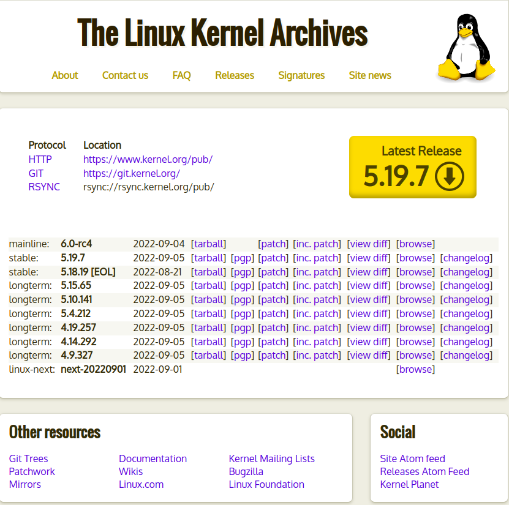
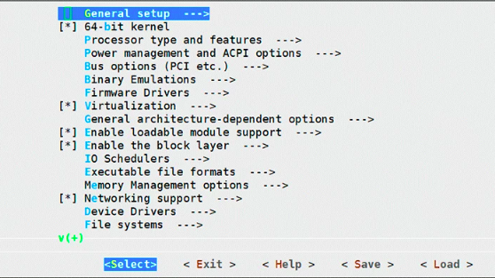

How to compile the GNU/Linux Kernel#
¿QUÉ ES UN KERNEL?#
Linux comienza en 1991 como un proyecto personal del estudiante finlandés Linus Torvalds: crear un nuevo núcleo de sistema operativo libre. El núcleo (kernel) Linux resultante ha estado marcado por un crecimiento constante a lo largo de su historia. Desde el lanzamiento inicial de su código fuente en 1991, ha crecido de una pequeña cantidad de archivos C bajo una licencia que prohíbe la distribución comercial, a la versión 5.6 en 2020 con más de 33,14 millones de líneas de código fuente, sin contar comentarios, bajo la GNU General Public License v2.2.
Step 0: INSTALAR LOS PRE-REQUISITOS#
Antes de comenzar la compilación del kernel y su personalización, deberemos tener instalados una serie de paquetes en el sistema. Para ello, si estamos en una distribución de tipo Debian/Ubuntu ejecutaremos e instalaremos los siguientes paquetes de una sola vez:
$ sudo apt-get -y install build-essential libncurses-dev libncurses-dev flex bc bison openssl libssl-dev dkms libelf-dev libudev-dev libpci-dev libiberty-dev autoconf
Step 1: DESCARGAR CÓDIGO FUENTE DEL KERNEL#
Descargaremos la versión que queremos de kernel de su web oficial https://www.kernel.org/, en este caso descargaremos la versión 5.10.13. Copiaremos la dirección de descarga para descargarlo directamente en consola con wget.
$ wget "https://cdn.kernel.org/pub/linux/kernel/v5.x/linux-5.10.13.tar.xz"
Step 2: DESCOMPRIMIR EL FICHERO CON LAS FUENTES DEL KERNEL#
$ tar avxf linux-5.10.13.tar.xz
Step 3: ENTRAR EN EL DIRECTORIO#
$ cd linux-5.10.13/
Step 4: COPIAR CONFIGURACIÓN DEL KERNEL ACTUAL#
Realizar la configuración desde 0 de las opciones es casi una opción “imposible” incluso para usuarios con nivel alto de conocimiento de GNU/Linux. Por eso, lo habitual es partir de una configuración funcional del kernel y a partir de ella ir eliminando elementos innecesarios o añadir aquellos que se necesitan. En este ejemplo, el kernel que estamos usando en Debian es 4.19.0-6-amd64 y lo que queremos hacer es compilar e instalar el 5.10.13:
$ uname -a
Para copiar la configuración del kernel y sus módulos actuales, nos situaremos dentro del directorio del kernel que hemos bajado y ejecutaremos el siguiente comando. Con este comando tendremos un fichero llamado .config con la misma configuración del kernel que estamos usando ahora mismo:
$ cp /boot/config-$(uname -r) .config
Step 4: CONFIGURAR EL KERNEL A NUESTRA MEDIDA#
Este paso sin suda es el mas importante de todos. Aquí es cuando seleccionamos que opciones queremos soporte nuestro kernel o cuales queremos que no. Cuales queremos integrar dentro del kernel o cuales queremos que estén como módulos.
Aunque hay varias formas de mostrar la configuración del kernel, la mas habitual esa usar “make menuconfig” desde un terminal, ya que su uso es muy cómodo, rápido y realmente sencillo de usar con las flechas , el tabulador y la barra espaciadora.
Por defecto, al lanzar “make menuconfig”, leerá el fichero .config en el directorio de las fuentes del kernel. Por tanto, como ya hemos copiado el fichero del kernel actual (ver punto anterior) al fichero .config, tan solo debemos ejecutar el siguiente
$ make menuconfig
Saldrá un menú como este:
Step 5: COMPILAR EL KERNEL#
na vez tenemos nuestra configuración hecha, deberemos ejecutar el siguiente comando e ir a tomar un café, porque la compilación tarda bastante. Principalmente la compilación se demora por la cantidad de módulos y opciones a compilar y por el hardware que estemos usando. para compilar ejecutaremos lo siguiente:
$ make
Step 6: INSTALACIÓN DE LOS MÓDULOS
Una vez finalizada la compilación del kernel y los módulos, es hora de instalar los módulos con el siguiente comando:
$ make modules_install
Step 7: INSTALACIÓN DEL KERNEL#
Tras instalar los módulos, instalaremos el kernel con el siguiente comando:
$ make install
Step 8: Reiniciar#
El último paso que queda es reiniciar y arrancar GNU/Linux y… cruzar los dedos! … no querrás ver un Kernel Panic! :D Por eso te recomiendo no borrar los kernels antiguos y tener siempre varios kernels (aunque sean viejos) que funcionen correctamente.